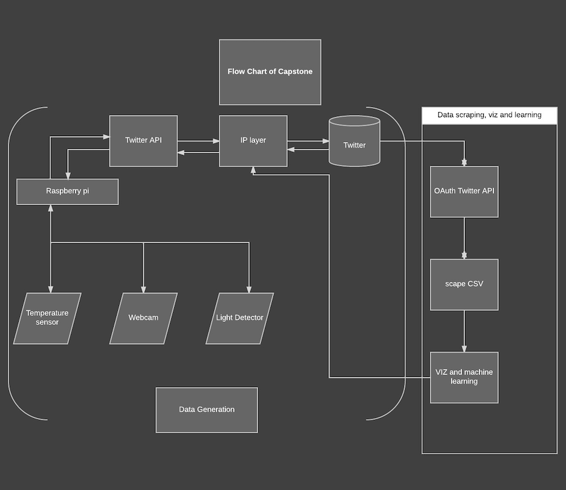
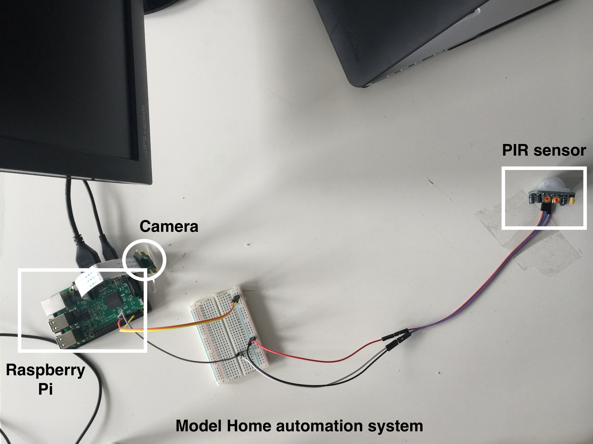
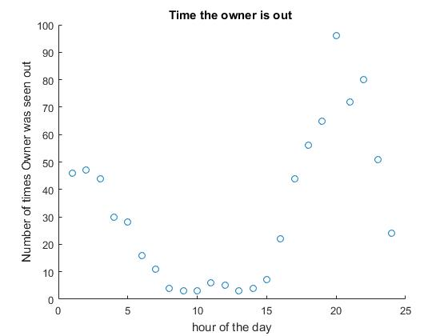
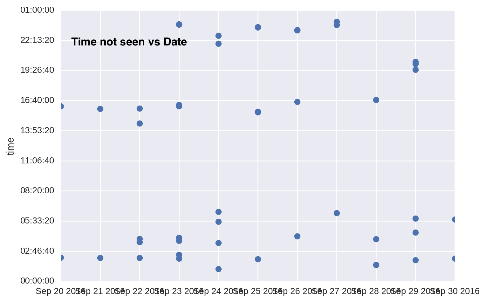
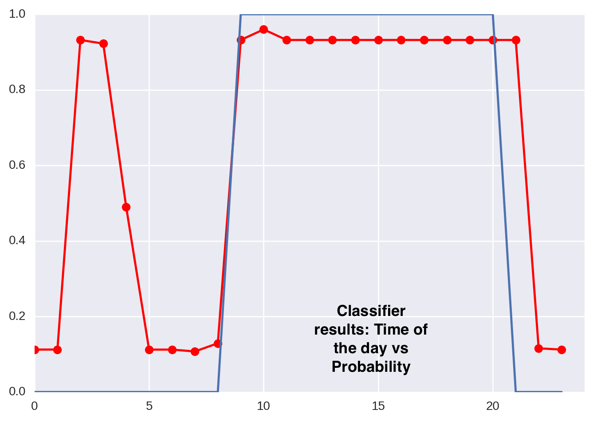

The Data Incubator Capstone I am presenting is a Home automation solution that incorporates supervised learning. The system will attempt to predict when a person will arrive or leave a room. Using this output, the lights will be triggered On or Off. The data generated is pushed to twitter, giving the system a mock personality.
The flowchart below describes the project on a high level. For data generation, I used a Raspberry pi coupled with a web cam and an infrared body heat detector. The Raspberry Pi was programmed to periodically post the data from the sensors to twitter. Available at twitter handle
.
The next step was to use the twitter API to scrap the data and save it as a CSV file. The tweets garnered signal whether the person is entering or leaving the room. I used this data to vizualize when the Inhabitant is most likely to use energy in the smart home.
The features were trained on a cross validated classifier- SVM and based on the probabilty output by the model, the system attempts to switch on the lights in that room.


GRAPHS

Number of times the person was not seen

Time not seen vs dates

SVM results: Time of the day vs Probability
Conclusions
The classifier reveals with a high probability that the person is in the room betweem 9am to 5pm. However, the graphs reveals something interesting as well. It shows with comparitively lesser probability that he is at his desk between 2am to 4am. Closer inspection using the camera reveals that the cleaners where detected during the time resulting in a false positive.
Future Scope
The PIR sensor output should be tweated to only detect a person when he is in extremely close proximity to it (like 2 feet) in order to avoid false positives. In addition to this, the pictures available on Twitter open a new string of possibilities in terms of image processing and feature selection (like checking if the door is open, detecting if someone else is in the room or even checking for the amount of day light.) In the future, the project would encompass feature generation from images to train another binary classifier. These classifiers can be cascaded to give more meaningful predictions. For example, we could have a classifier to predict daylight and another classifier to detect if the door is closed. These two classifiers could produce features to train another classifier to detect if someone is in the room.